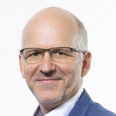

The Fourth Workshop on Collaboration Mining for Distributed Systems (COMINDS 2025) aims to facilitate the sharing of research findings, ideas, and experiences on new process mining techniques and practices for analyzing collaboration processes. Process mining is a powerful tool for the analysis of business processes carried on by one participant. However, it lacks approaches able to deal with the analysis of collaboration processes implemented by many participants in a distributed system e.g., supply chains involving manufacturers, producers, and retailers; healthcare scenarios involving patients, hospitals, and doctors; or even multi-agent systems and smart systems like multi-robot and IoT systems. In this setting, confidentiality, privacy, data heterogeneity, and case correlation are only a few of the issues related to data preprocessing. Confidentiality, privacy, data heterogeneity, and case correlation are only a few of the issues related to these scenarios. At the same time, object-centric process mining extends the analysis to the interactions and dependencies between different objects across organizations. This is particularly important in inter-organizational process mining, where data is often spread across different domains with varying formats, structures, and privacy concerns. It helps to uncover hidden inefficiencies, bottlenecks, and coordination issues that arise when multiple entities are involved in a shared process. In this direction, the workshop points to creating a dialogue centered on the development of scientific foundations enabling the application of collaboration mining for distributed systems.
Download CfPThe main topics include, but are not limited to:
Facultad de Ingeniería, Universidad de la República (UdelaR), Room B22 – Annex Building 2nd floor, October 20th 2025
| Time | Authors | Title |
|---|---|---|
| 14:00 | Prof. Agnes Koschmider | Keynote: SOURCED: Process Mining on Distributed Data Sources |
| 15:00 | Maximilian Weisenseel, Fabian Sandkuhl, Henrik Kirchmann, Matthias Weidlich and Florian Tschorsch | Full paper: Filtering at the Edge: Exploring the Privacy-Utility Trade-Off |
| 16:00 | Hendrik Reiter, Janick Edinger, Martin Kabierski, Agnes Koschmider, Olaf Landsiedel, Arvid Lepsien, Xixi Lu, Andrea Marrella, Stefan Schulte, Estefania Serral, Florian Tschorsch, Matthias Weidlich and Wilhelm Hasselbring | Full paper: ContinuumConductor: Decentralized Process Mining on the Edge-Cloud Continuum |
| 16:30 | Lucía Antunes, Andrea Delgado and Laura González | Full paper: Process Mining for e-Government collaborative processes choreography: a case study |
| 17:00 | Sara Pettinari, Mahsa Bafrani, Andrea Delgado Mathias Weske and Lorenzo Rossi | Manifesto session |
Speaker: Prof. Agnes Koschmider
Title: SOURCED: Process Mining on Distributed Data Sources
Abstract: TBD
Short bio: Agnes Koschmider is a professor of Business Informatics at the University of Bayreuth.
Prior to this position Agnes Koschmider was professor of Business Informatics at the Computer Science Institute of the University of Kiel. She completed her PhD and her habilitation in Applied Informatics at KIT.
Agnes conducts research on methods for data-driven analysis and explanation of processes using artificial intelligence.
Her work centers on process analytics, in particular the development of pipelines that efficiently handle the entire chain from raw data (time series, sensor events, and video data) to process discovery. Such data pipelines have applications across a wide range of disciplines.
The workshop welcomes submissions of regular full papers, abstracts, and posters.
Regular papers must be original contributions that have not been published or submitted to other conferences or journals in parallel with this workshop.Submissions must use the Springer LNCS/LNBIP format (https://www.springer.com/gp/computer-science/lncs/conference-proceedings-guidelines). Submissions must be in English and cannot exceed 12 pages (including tables, figures, the bibliography and appendices). Accepted papers will be published by Springer as a post-workshop proceedings volume in the series Lecture Notes in Business Information Processing (LNBIP). At least one author of each accepted paper must register and participate in the workshop. Please visit the main conference website (https://icpmconference.org/2025/) for more information
Abstracts and posters could be ongoing research or non-research contributions such as case studies, experiences, lessons learned from projects, industry showcases, and software tool demonstrations significant for the workshop theme. Abstracts and poster presentations will take place in an interactive and participation-encouraging format based on the number and nature of the accepted contributions. Authors must submit max 2 pages for abstracts using the Springer LNCS/LNBIP format, or 1 page A0 for posters. Abstracts and posters will be uploaded to the workshop website. At least one author of each accepted abstract and poster must register and participate in the workshop.
Papers should contain a short abstract, clarifying the relation of the paper with the main topics (preferably using the list of topics above), clearly stating the problem being addressed, the goal of the work, the results achieved, and the relation to other work. Papers should be submitted electronically as a self-contained PDF file via the submission system (https://easychair.org/conferences/?conf=icpm2025). When submitting your paper, in the submission system, please select the name of the workshop track, COMINDS track.
The authors of selected regular papers will be invited to submit an extended version of their contributions to the Process Science journal.
For any enquiry please write in email to: cominds-2025@easychair.org

Mathias Weske
Hasso-Plattner-Institut, University of Potsdam, Germany